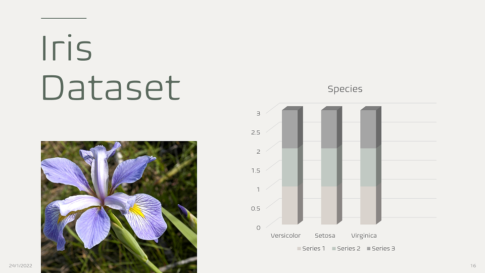

A company's stock share is a piece of the company more precisely:
A stock (also known as equity) is a security that represents the ownership of a fraction of a corporation.
This entitles the owner of the stock to a proportion of the corporation's assets and profits equal to how much stock they own.
Units of stock are called "shares."
An investor can buy a stock and sell it later. If the stock price increases, the investor profits, If it decreases,the investor with incur a loss.
Determining the stock price is complex; it depends on the number of outstanding shares, the size of the company's future profits, and much more.
In this paper, we have designed an application for calculating various parameters of electronics and
related analog circuits effortlessly using the MATLAB app
designer. In the field of electronics engineering, be it researchers,
scientists, students or engineers; everyone come across difficulty in
the calculations of several parameters in complex circuits like
voltage, current, resistance, time constant etc. Time and effort was saved by buildng an application on MATLAB.
Refer to Page 331
Chatbots are computer programs that simulate and process human conversations
(written or spoken) and interact with digital devices as if people were communicating
with real people.
Chatbots are frequently used to improve the IT service management experience, which delves
towards self-service and automating processes offered to internal staff. With an intelligent
chatbot, common tasks such as password updates, system status, outage alerts, and knowledge management
can be readily automated and made available 24/7,
while broadening access to commonly used voice and text based conversational interfaces.
This data set consists of the physical parameters of three species of flower — Versicolor, Setosa and Virginica. The numeric parameters which the dataset contains are Sepal width, Sepal length, Petal width and Petal length.
In this data we will be predicting the classes of the flowers based on these parameters. The data consists of continuous numeric values which describe the dimensions of the respective features. We will be training the model based on these features.

Thank you for visiting.